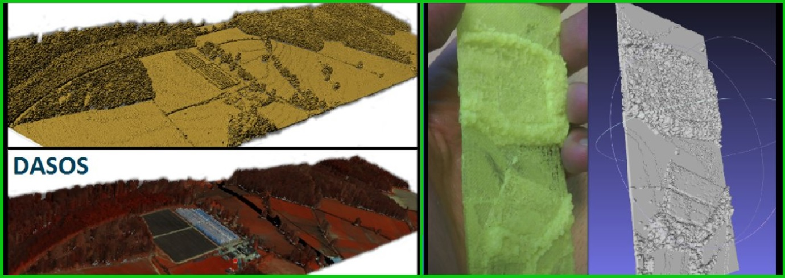

Analysis of SAR and thermal satellite data time-series for understanding the long-term impact of land surface temperature changes on forests
ASTARTE(EXCELLENCE/0918/0341) - 250,000EUR
Climate change alters our environment by shifting weather conditions, rising sea levels, increases flood risks and threatens food production. This results into increased stress to our society, economy and environment (United-Nations). Shoukri and Zachariadis, 2012, stressed that Mediterranean Europe is expected to experience the most adverse climate change effects compared to other EU regions. According to MODIS data, the Land Surface Temperature (LST) of Cyprus has been increased from 2011 to 2017. Further, Cleland et al, 2017 showed that climate change confers shifts to plants blooming time. The question is: does LST relates to forest decline and does blooming timing of Cypriot forests have been altered over the years due to climate change? During this project our partners at National Technical University of Athens researched the impact of LST on Cypriot forests by anaysing time-series of NDVI and thermal data (paper: https://www.mdpi.com/2072-4292/14/4/1010). Using time-series of SAR data, I identified pest attacks, the most important months for observing the strength of the act of pityocampa (that annually eats the needles of pines) and how alternations to timing of forest blooming alters in relation to precipitation and in-situ thermal data (paper: https://www.mdpi.com/2072-4292/14/15/3581). We also processed chlorophyl data and I noticed that the peak of chlorophyll happens simultaneously with lower forest density identified by SAR. During that time, the lower canopy of the forest is blossoming, and the needles of the pines are being regenerated but the act of pityocampa is at its maximum resulting into lower forest density (work to be published). In this project we also disseminated questionnaires about “Climate change and Forest threads” in collaboration with Friends of the Earth (Cyprus) and I analysed them. We found a positive correlation between being employed and beliefs aligned with climate changes and showed that people can notice climate change related phenomena, while this was not possible according to the literature 10 years ago (paper: https://www.mdpi.com/1999-4907/12/9/1152) . There are prospects of combining my experience of LiDAR and adding on that project, as well as collaborating with social science to further research the demographic relation in beliefs and consequences of climate change.

Related Publications
2025
- PLOTTOSAT: A TOOL FOR GENERATING TIME-SERIES SIGNATURES FROM SENTINEL-1 AND SENTINEL-2 AT FIELD-BASED PLOTS FOR MACHINE LEARNING APPLICATIONS
M. Miltiadou, S. Grieve, P. Ruiz-Benito, J. Astigarraga, V. Cruz-Alonso, J.T. Triviño , E.R. Lines Environmental Modelling & Software
- EXPLORING SENTINEL-1 RADAR POLARISATION AND LANDSAT SERIES DATA TO DETECT FOREST DISTURBANCE FROM DUST EVENTS: A CASE STUDY OF THE PAPHOS FOREST IN CYPRUS
C. Theocharidis, M. Eliades, P. Kolokoussis, M. Miltiadou, C. Danezis, I. Gitas, C. Kontoes and D. Hadjimitsis Remote Sensing
2024
- TREE GENERA CLASSIFICATIONS IN SPAIN USING TIME-SERIES SENTINEL-2 DATA EXTRACTED FROM PLOTTOSAT
M. Miltiadou, S. Grieve, P. Ruiz-Benito, J. Astigarraga, V. Cruz-Alonso, J.T. Triviño , E.R. Lines IEEE IGARSS 2024
2022
- A SELECTION OF EXPERIMENTS FOR UNDERSTANDING THE STRENGTHS OF TIME-SERIES SAR DATA ANALYSIS FOR FINDING THE DRIVES CAUSING PHENOLOGICAL CHANGES IN PAPHOS FOREST, CYPRUS
M. Miltiadou, V. Karathanassi, A. Agapiou, C. Theocharidis, P. Kolokoussis, C. Danezis Remote Sensing
- TIME-SERIES ANALYSIS OF LANDSAT DATA FOR INVESTIGATING THE RELATIONSHIP BETWEEN LAND SURFACE TEMPERATURE AND FOREST CHANGES IN PAPHOS FOREST, CYPRUS
V. Andronis, V. Karathanassi, V. Tsalapati, P. Kolokoussis, M. Miltiadou, C. Danezis Remote Sensing
- DO PEOPLE UNDERSTAND AND OBSERVE THE EFFECTS OF CLIMATE CRISIS ON FORESTS? THE CASE STUDY OF CYPRUS
M. Miltiadou, E. Antoniou, C. Theocharidis, C. Danezis Forests
